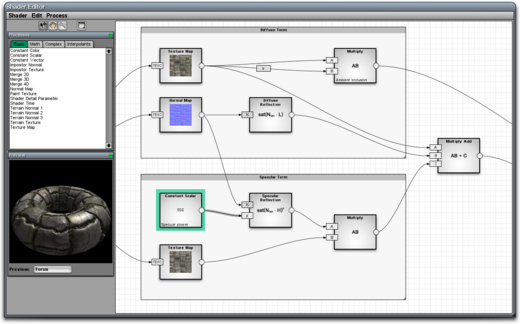

Shader Editor
From C4 Engine Wiki
There are two ways to create materials in the C4 Engine. The first method is to simply configure a set of predefined attributes in the Material Manager. This is the easiest and fastest way to create a new material, and most ordinary materials can be made using only those attributes. A more advanced method is to use the Shader Editor to define the exact calculations used by the engine to render a material. The Shader Editor provides you with the power to create a limitless variety of materials within the context of a graphical interface.
Opening the Shader Editor

Shader Graphs
A shader is represented in the Shader Editor by what is known as a data flow graph. The nodes in this graph are called processes, and the edges in this graph are called routes. A shader is a special type of graph called a directed acyclic graph, or DAG, meaning that data flows in a specific direction from one process to another and there are no loops.
Each box in the shader graph represents a single process. A process can be a simple mathematical operation, a constant input value such as a color, an interpolated value such as the direction to the light source, or a more complex operation defined by the engine such as a parallax offset calculation.
A route is a directed edge shown as a curve with an arrowhead at one end, and it represents the flow of data from one process to another. Routes begin at one process and end at a port belonging to another process. Every process has between zero and four ports, and each can be occupied by only one incoming route at a time. Ports with a plain background are required, and ports with a striped background are optional. All required ports must have an incoming route attached to them in order for the shader to be valid.
Editing a Shader
The tabbed lists on the left side of the Shader Editor show the processes that are available for use in a shader. They are divided into four categories that are described in more detail below: basic, math, complex, and interpolants. A new process is added to a shader by selecting it in the list and then clicking in the viewport. The editor won't let you place two processes on top of each other, and the cursor will change to indicate where it's possible to place a new process.
Routes are added to a shader by clicking inside the circle on the right side of a process and dragging into a port belonging to another process. This causes a new route to be created beginning at the process you clicked on and ending at the input port to which you dragged. If a port is already occupied by another route, then the existing route is deleted and replaced with the new route that you are creating. You cannot connect a route from one process to a port belonging to any other process preceding that process in the graph because it would create a cycle.
The physical position of a process in the viewport is irrelevant. The data flow structure of a shader is determined entirely by the route connections. Processes may be placed in any convenient location.
Processes
A process takes between zero and four inputs and produces at most a single output. The output may be sent to any number of input ports for other processes.
For many types of processes, the process box shown in the Shader Editor displays additional information. For example, the Texture Map process shows a small image of the texture map, and the Constant Vector process shows the four constant values that it outputs. Most mathematical operations display a mathematical expression showing exactly how their input values are used to calculate an output value.
Double-clicking on a process, or selecting a process and typing Ctrl-I (Cmd-I on the Mac), opens the Process Info window for that process. In the Process Info window, every process has a comment field that let's you specify some text that is displayed at the bottom of the process box in the Shader Editor. Some processes also have extra settings that appear in the Process Info window.
Each type of process available for use in a shader is described individually on the following pages (corresponding to the groups displayed in the Shader Editor):
Routes
The routes in a shader graph carry data from one process to another. Each route can carry between one and four floating-point values—the actual number is determined by the output size of the route's start process.
A swizzle and negation may be applied to a route. These can be set by double-clicking on a route or by selecting a route and typing Ctrl-I (Cmd-I on the Mac). By default, the swizzle for a route is xyzw, meaning that there is no change to the order of the components. If any other swizzle is specified, or the values are negated, then that information is displayed in a small box at the center of the path representing the route. The swizzle may be specified using any letters from the sets xyzw, rgba, or stpq. Specifying only a single letter is shorthand for the same letter repeated four times. For example, the swizzle z is equivalent to the swizzle zzzz.
If a route carries fewer than four components, then each component specified in its swizzle is clamped to the last available component. For example, if a route carries only three components, then any w, a, or q in the swizzle ultimately interpreted as the third component of the data carried by the route. The swizzle wxyz would really mean zxyz. This is particularly important in the case that two routes of different sizes are used as inputs to a binary operation. The operation is performed using the number of components for larger of the two routes, so the missing components of the smaller route are taken from the components specified by the clamped swizzle.
Shader Editor Tools
There are four tool buttons in the upper-left corner of the Shader Editor window, and they have the following uses. In addition to clicking on the tool button, each of these tools can also be selected by pressing the shortcut number key as shown in the table. (The shortcuts were chosen to be the same as the corresponding tools in the World Editor.)
|
Icon |
Shortcut |
Function |
|
|
1 |
Select / Move. Selects a process or route in a shader. Clicking outside of a process and dragging will create a box that selects all of the processes inside it. Clicking inside a process and dragging moves all of the currently selected processes. (When processes are moved, they are automatically prevented from moving on top of other processes.) |
|
|
6 |
Scroll. Scrolls the shader viewport. Holding the Alt key (Option on the Mac) with any other tool temporarily selects the scroll tool. |
|
|
7 |
Zoom. Changes the scale of the shader viewport. Using the mouse wheel with any other tool also zooms. |
|
|
Draw Section. Draws a rectangular box with a title bar behind all processes in the graph. This can be used to visually organize groups of processes in a shader. |
Output Processes
Each shader graph contains a set of output processes that represent the final values produced by the shader. These are colored green in the shader editor, they cannot be deleted, and they can have no output routes. The only output process that has a required input port is the Ambient Reflection Output process. All other output processes have only optional input ports and are ignored if they are not used.
The individual output processes are described in the following table.
|
Process |
Description |
|
Ambient Reflection Output |
Inputs: RGB color RGB (required), Normal N (optional) Output: None This is the primary output process for the ambient shader. The color sent to this output process is combined with the ambient lighting environment to produce the final ambient light reflection for a material. The normal vector N is currently unused, but will be important in future ambient lighting models. |
|
Light Reflection Output |
Inputs: RGB color RGB (optional), Impostor depth Z (optional) Output: None This is the primary output process for the light shader. The color sent to this output process is combined with the color from a light source to produce the final light reflection for a material. In an impostor shader, the alpha channel of the output of the Impostor Normal process should be sent to the Z input port to provide the impostor depth. |
|
Alpha Output |
Inputs: Scalar A (optional) Output: None If a material is transparent, then the alpha value sent to this output process controls the transparency. This is currently useful only for objects rendered in the effect pass. If the Glow Output process is used, then the Alpha Output process is ignored. |
|
Alpha Test Output |
Inputs: Scalar A (optional) Output: None If a material uses the alpha test, then the value sent to this output process is the value that is tested. The material must have the alpha test flag set in the Material Manager for this output process to be used. |
|
Emission Output |
Inputs: RGB color RGB (optional) Output: None The color sent to this output process is added to the final ambient color as an emission term. |
|
Glow Output |
Inputs: Scalar A (optional) Output: None If a material uses emission glow, then the value sent to this output process determines the glow intensity. The material must have the emission glow flag set in the Material Manager for this output process to be used. If the alpha test flag is set, then the Glow Output process is ignored. |
|
Bloom Output |
Inputs: Scalar A (optional) Output: None If a material uses specular bloom, then the value sent to this output process determines the bloom intensity. The material must have the specular bloom flag set in the Material Manager for this output process to be used. |
|
Reflection Buffer Output |
Inputs: RGB color RGB (optional), Tangent-space normal vector N (optional) Output: None If this output process has an input, then a sample from the reflection buffer is multiplied by the input color and added to the final ambient color. A tangent-space normal vector may be sent to the N input port in order to create a bumpy appearance for the reflection. Normal incidence reflectivity and bump offset scale settings can be configured in the Process Info window. |
|
Refraction Buffer Output |
Inputs: RGB color RGB (optional), Tangent-space normal vector N (optional) Output: None If this output process has an input, then a sample from the refraction buffer is multiplied by the input color and added to the final ambient color. A tangent-space normal vector may be sent to the N input port in order to create a bumpy appearance for the refraction. The bump offset scale setting can be configured in the Process Info window. |
|
Environment Output |
Inputs: RGB color RGB (optional), Tangent-space normal vector N (optional) Output: None If this output process has an input, then a sample from the environment map is multiplied by the input color and added to the final ambient color. A tangent-space normal vector may be sent to the N input port in order to create a bumpy appearance for the environment map. An override environment map can be specified in the Process Info window. |
|
Impostor Depth Output |
Inputs: RGBA color SHAD (optional) Output: None In an impostor shader, the output of an Impostor Texture process sampling the impostor's shadow map should be sent to the SHAD port of this process. |